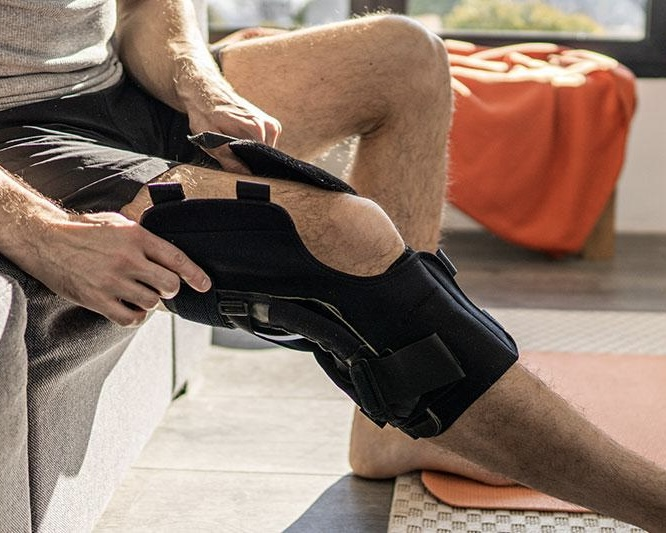

Після операцій та травм
Легкий старт при набряку та болю: ізометрії, лімфодренаж, безпечна мобілізація.
Авторський курс від фізичного терапевта з 10-річним досвідом
Лише за 390 грн, замість 1899 грн
1200+ учасників уже повернулись до активного життя
Курс для тих, хто хоче безпечно зняти біль у коліні та повернутись до активності вдома — без ліків і дорогих процедур.
Легкий старт при набряку та болю: ізометрії, лімфодренаж, безпечна мобілізація.
Артроз, пателофеморальний синдром, «коліно бігуна» та інші стани.
Для тих, хто хоче повернутись до бігу, спорту чи активного життя без болю.
Якщо коліно болить навіть при ходьбі чи сходах — курс допоможе відновити функцію.
Біль можна «погасити», але без відновлення функції коліна симптоми повертаються при кожному навантаженні.
Знімають запалення й біль, але не відновлюють силу, контроль і біомеханіку.
Масаж/апарати дають полегшення «тут і зараз», та не формують адаптації тканин.
Вправи «для всіх» без тестів і прогресії → нестійкий результат.
Симптоми стихають, але без активного відновлення повертаються біль і нестабільність.
Менiск, зв’язки, ПФБ — різні протоколи. Одна «пігулка» не працює для всіх.
Поетапний протокол з тестами безпеки. Вправи вдома, без тренажерів. Підтримка нагадуваннями та PDF-планами.
Безпечна прогресія, як уникати загострень.
Коли і як додавати навантаження.
Трекінг чашечки, сила сідниць/квадрицепса.
Ексцентрика та пліометрія без ризику.
Етапи стабілізації та контроль навантажень.
Техніка масажу коліна та стабільність чашечки.
Отримуй щоденні нагадування в календарі й PDF-плани на телефон, щоб не пропускати тренування навіть офлайн.
Усе, що потрібно для безпечного і послідовного відновлення коліна вдома.
Короткі, зрозумілі ролики з технікою та прогресією.
Артроз, меніск, ПФБ, «коліно стрибуна», зв’язки, «коліно бігуна».
Готові плани вправ для офлайн-доступу на телефоні.
Щоденні нагадування, щоб не пропускати тренування.
Зокрема масаж рубців після операції та безпечні методики.
Курс знаходиться в застосунку Телеграм. Зручно та завжди під рукою
Пройди короткий тест (60 сек) — підкажемо оптимальний старт і покажемо релевантні бонус-відео.
Почни сьогодні. Є 14-денна гарантія повернення, доступ — назавжди.
* Кількість розборів обмежена
Спробуй курс без ризику. Якщо протягом 14 днів не отримаєщ жодного результату та користі для себе — я поверну оплату без зайвих питань.
Я хочу, щоб ти зосередився на результаті, а не на сумнівах щодо покупки.